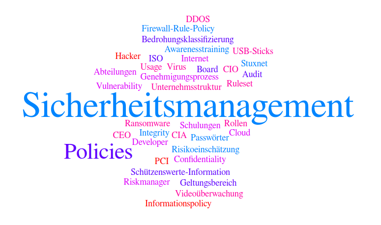

### E-Security 1 - Vorstellung #### Wintersemester 2018/2019 FH JOANNEUM
### Vorstellung - Wer bin ich? - DI (FH) Josef Tschiggerl - externer Lehrbeauftragter - Absolvent IMA05 an der FH Joanneum - ~9 Jahre bei Wirecard CEE als Team Lead Operation Engineer
### E-Security 1 @ AIM - 2 SWS -> 2 ECTS - Integrierte Lehrveranstaltung mit Vorlesungen und Übungen - Benotung über Mitarbeit, Präsentationen und Ausarbeitungen - Slides/Übersicht auf https://github.com/joseftsch/esec1
### E-Security 1 @ AIM - Einführung und Terminologie - Sicherheitsmanagement - Normen und Zertifizierungen (ISO 27k Serie, BSI, VdS 3473, PCI) - Bedrohungsklassifizierung und Risikoanalyse - "Tools of the trade" - Abschlussübung
### Vorstellungsrunde - Ihre Erwartungen an ESEC? - Ihr Zugang zu E-Security im Alltag?
### Tag Cloud und Buzzwords 